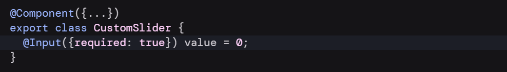
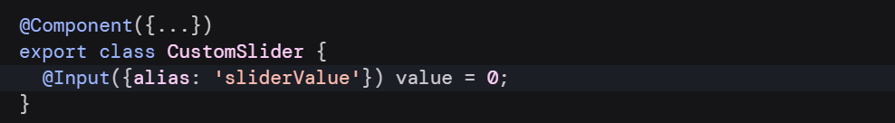
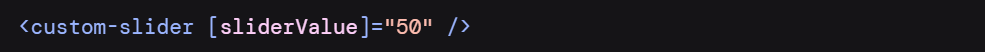
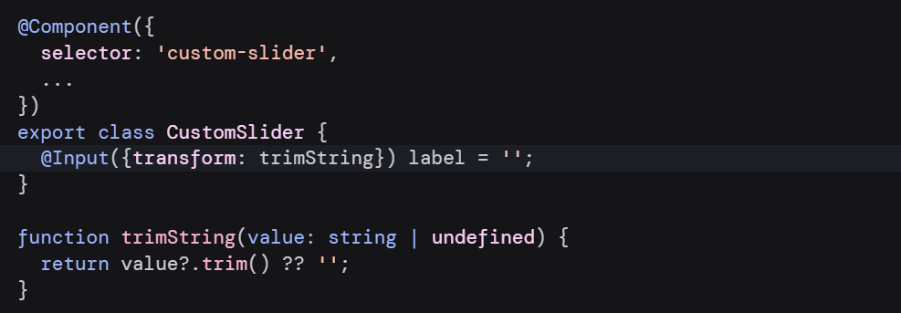

A highly requested feature that are present in Angular #v16.0, but
was
introduced from Angular #v15.1 allows
us to use self-closing tags for components in Angular templates.
It's a small developer experience improvement that could save us some typing!
{{example()}}
{{example2()}}
The @Input decorator accepts a config object that lets you change the way that input works.
Required inputs
You can specify the required option to enforce that a given input must always have a value.
If you try to use a component without specifying all of its required inputs, Angular reports an error at build-time.
Input aliases
You can specify the alias option to change the name of an input in templates.
 
This alias does not affect usage of the property in TypeScript code.
While you should generally avoid aliasing inputs for components, this feature can be useful for renaming
properties while preserving an alias
for the original name or for avoiding collisions with the
name of
native DOM element properties.
Input transforms
You can specify a transform function to change the value of an input when it's set by Angular.

In the example above, whenever the value of systemVolume changes, Angular runs trimString and sets label
to the result.
The most common use-case for input transforms is to accept a wider range of value types in templates,
often including null and undefined.
Input transform function must be statically analyzable at build-time. You cannot set transform functions
conditionally or as the result
of an expression evaluation.
Input transform functions should always be pure functions. Relying on state outside of the transform
function can lead to
unpredictable behavior.